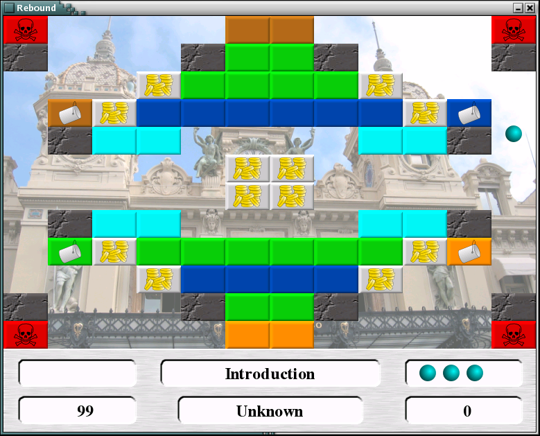

download :
about :
progress :
help :
author :
screenshot
About
Sometime in the early 90s a game existed on the Macintosh called
Diamonds which was something like a cross between a puzzle and action
game. The game play required for the player to use the ball on the
screen to hit bricks and destroy them. However, rather than hitting
the ball with a paddle like breakout, the player controlled the
left and right of the ball with the arrow keys. The ball still
bounces up and down on its own, but there is no bottom to fall off of.
To make the game more interesting some of the bricks were different
colors so that only when the ball was the same color could the brick
be removed. There was also a key and lock brick set
where you first had to get the key to remove the lock brick. Other
bricks existed with other functions but the basic goal remained, remove
the bricks to pass the level.
The resulting game was fun, challenging, and suitable for all ages.
Rebound is a reimplementation of the Diamonds game in C++ for Linux.
Progress
I believe the game is nearly done! I would consider release
0.9.14 to be a late beta and ready for download and play. This release
comes with fourteen levels which I think are fun to play and
challenging. Anyone can add new levels by editing the data/level.ldf
file. A readme exists in the same directory which describes the format
of the level file.
The following are a list of items which I feel are still remaining
before I release a 1.0 version.
- Levels - I still need more levels, at least 15.
- Installer - I need to enable the tool to be installed rather
than just assume the current directory. This also means adding a --prefix
and --libs, --includes options for easy configuration. I think SCONS has
support for these.
The following items are things I would like to eventually fix/work on
for a 1.5 version.
- Artwork - My artwork is just so so. I'm still in the
process of learning Inkscape which is why some of the images have a
bit of a campy feeling. Better artwork is needed.
- Score Area - Eventually I would like the countdown timer
to be graphical (a set of vertical bars) like the original game
was. I would also like that once a user cleared the screen they
could watch as the points were "moved" from the timer to the
score ... again, like the original game did.
- Comments in Level Parser - Currently you can't have any
comments in the ldf file. I need to update the parser to allow
for comments which I believe means messing with the lexer.
- Level Parser Error Messages - Currently the level
parser does not tolerate errors in the level data very well
at all. At some point I need to dig into boost spirit again to
figure out how to add nicer error messages.
- Even more levels - It would seem reasonable to have somewhere
on the order of 25 or more levels.
The following are items I dream about adding for 2.0 version which
may or may not ever come to light.
- High Score listing - You know, like real games often have
where you can enter your initials and see the highest scores with
the highest levels achieved.
- Selecting a level file - The level.ldf file has a tag at the
top for title which is, so far, never used. My goal for this was
to have multiple level.ldf files (intro.ldf, basic.ldf, advanced.ldf)
and give the user a selectable list of "games" to play when the
application started. This way an advanced user would not need to play
all the intro levels to get up to the more challenging ones. And vice-versa
kids would not get frustrated trying to pass some of the more advanced
levels.
-
Help
I could use the most help in writing new levels and the artwork. For now
I want to maintain control over the code so I don't need any programming
assistance yet. If you are interested in writing additional levels
they are really easy to do by simply editing the
levels.ldf file in
the data directory.
Author
So far the game has been written entirely by myself,
Joshua Gerth, but I am
hoping to get some assistance in the levels and artwork. Of course,
my work on this game pales in comparison to the amazing amount of
work put in by the people who wrote the SDL and boost libraries on
which this game depends.
My primary goal from this game are to learn SDL, boost signals and
boost spirit technologies. A secondary goal is for me to have
something I wrote available to others, rather than being blocked
behind IP obligations of my job. A tertiary goal is to have a game
which is fun and playable by my daughter.
Screenshot
Version 0.9.14

|